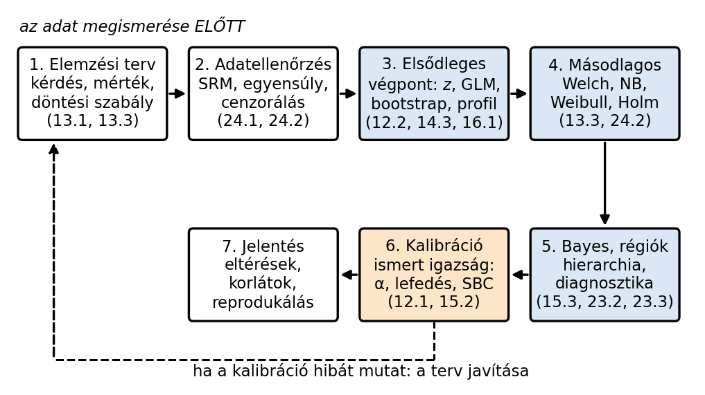
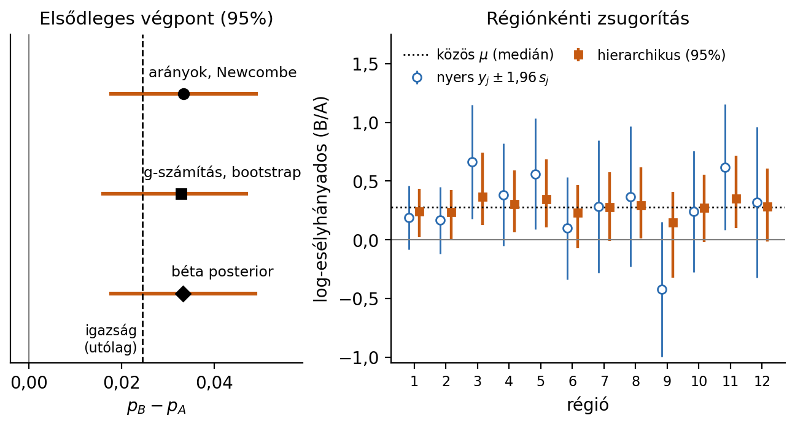

Egy webáruház új pénztároldalt vezetett be kísérleti jelleggel: a felhasználók véletlenszerűen a régi (A) vagy az új (B) változatot kapták. A 28 napos beléptetést 90 napos követés zárta. A vezetőség öt dolgot szeretne tudni. Növeli-e az új pénztár a vásárlás valószínűségét? Mennyivel nő a bevétel egy látogatóra? Nem kerül-e több ügyfélszolgálati jegybe? Visszatérnek-e hamarabb a vevők? És végül: a hűségprogram tagjai tényleg többet vásárolnak-e a program miatt?
Minden eszközünk megvan hozzá: a Többszörös tesztelés és a reprodukálhatóság, az Általánosított lineáris modellek: logisztikus és Poisson-regresszió, a Hierarchikus modellek, zsugorítás és empirikus Bayes, a A bootstrap és a Megbízhatóság és túlélési elemzés. A záróprojekt nehézsége nem egyetlen módszerben van, hanem abban, hogy a sok döntés (melyik végpont, melyik modell, melyik korrekció) ne az eredmény ismeretében szülessen, és hogy a végén megmutassuk: az eljárásunk egésze úgy viselkedik, ahogy állítjuk.
Az adat szimulált, ezért van egy olyan lehetőségünk, amely valódi projektben nincs: a végén összevethetjük a következtetéseket az igazsággal. Ezt a lapot a végéig nem fordítjuk fel.

Az ábra sorrendje nem formaság. A terv az adat megtekintése előtt rögzíti, mit tekintünk sikernek. Az adatellenőrzés a randomizáció épségét vizsgálja, még a végpontok előtt. Az elemzés a tervet hajtja végre. A kalibráció ismert paraméterekből generált adatokon futtatja le ugyanazt a kódot, és megméri az első fajú hibát és a lefedést. A jelentés külön felsorolja, miben tértünk el a tervtől, és miért. Ha a kalibráció hibát mutat, a tervet kell javítani, nem az eredményt magyarázni.
Definíció. Az előzetes elemzési terv (pre-analysis plan) az adatok megismerése előtt rögzített leírás: a vizsgált populáció és egység, a végpontok és becsülendő mennyiségeik (estimand), a módszerek, a döntési szabály, a többszörös tesztelés kezelése és az érzékenységvizsgálatok.
A becsülendő mennyiség azt mondja meg, mit becslünk, a módszer pedig azt, hogyan. Elsődleges végpontunknál a kettőt így választjuk szét: a becsülendő mennyiség az átlagos kezelési hatás, vagyis a konverziós valószínűség várható különbsége, ha mindenki B-t, illetve mindenki A-t kapna.
| Végpont | Mennyiség | Tervezett módszer | Család |
|---|---|---|---|
| E1: konverzió | kétmintás -próba, Newcombe | elsődleges | |
| M1: bevétel látogatónként | átlagkülönbség (Ft) | Welch, bootstrap | másodlagos |
| M2: jegyek száma | arányhányados B/A | Poisson-regresszió | másodlagos |
| M3: ismételt vásárlás | hazárdhányados | Weibull arányos hazárd | másodlagos |
| F1: hűségprogram | esélyhányados | korrigált logisztikus | feltáró |
A döntési szabály: E1 kétoldali próbája szinten; a másodlagos család három p-értékét Holm-eljárással korrigáljuk (a családi hibaarány legfeljebb 0,05); a feltáró eredményt nem nevezzük igazoltnak. Érzékenységvizsgálatként ugyanarra a kérdésre korrigált logisztikus regressziót, bootstrapet és Bayes-elemzést is futtatunk. Két korlát előre ismert: M3 csak a vásárlókra értelmezhető, tehát a randomizáció utáni részhalmazra, ahol az A és a B vevők összetétele eltérhet; F1 pedig megfigyelési, mert a hűségtagságot nem sorsoltuk.
Miért nem elég egy módszer? Az elsődleges kérdésre adott módszerek különböző feltevéseket tesznek. Ha egyeznek, a következtetés nem egy modellfeltevés műterméke. Ha eltérnek, az eltérés maga az eredmény, amelyet meg kell magyarázni.
A frekventista részt lefedési és hibaszimulációval ellenőrizzük (Pivot, - és -intervallum, a lefedés értelmezése mintája: a lefedés a módszer tulajdonsága). A Bayes-részhez a szimulációs alapú kalibráció (simulation-based calibration, SBC) való.
Tétel (a rang egyenletessége). Legyen a (valódi, normálható) prior, , és legyenek a helyes posteriorból egymástól és -tól feltételesen független, folytonos minták. Ekkor az rang egyenletes a halmazon.
Bizonyítás. A pár együttes eloszlása alakban is felírható. Tehát ha -et rögzítjük, a „valódi” maga is a posteriorból származó minta. Feltételesen -re ezért a értékek darab i.i.d. folytonos változó. Cserélhetőek, egyezés nulla valószínűséggel fordul elő, ezért rendezett sorbeli helye az lehetőség mindegyikét valószínűséggel veszi fel. Ez minden -re igaz, így -re átlagolva is.
Szavakban: ha a posteriorszámítás helyes, a sok ismétlés rang-hisztogramja lapos. Ha a posterior túl szűk, a valódi érték gyakran a mintán kívülre esik, és a hisztogram U alakú; ha túl széles, középen púpos; ha eltolt, ferde. A tétel feltétele a normálható prior: lapos, improper priorból nem lehet -t sorsolni.
Továbbvitt eredmény. A teljes elemzési munkafolyamat: (1) becsülendő mennyiség és terv az adat előtt; (2) a randomizáció ellenőrzése; (3) elsődleges elemzés egy döntési szabállyal, mellette érzékenységvizsgálat; (4) a családi hibaarány vagy a téves felfedezési arány kezelése; (5) ugyanazon kód kalibrálása ismert igazságú adaton; (6) jelentés az eltérésekkel és a korlátokkal. Ezt a mintát a Vegyes vizsgafeladatsor megoldásokkal modellezős feladatai kérik számon.
A kísérletben A-ban 3998 látogatóból 527, B-ben 4002-ből 661 vásárolt: , , a különbség .
A próbához a nullhipotézis alatt közös arányt becslünk: , és
így , a kétoldali p-érték .
Az intervallumhoz a külön arányokból számolt standard hiba kell:
és . Szavakban: az új pénztár a látogatók nagyjából 1,8–4,9 százalékpontjánál hoz létre pótlólagos vásárlást.
A Holm-lépcső a másodlagos család három p-értékére (a kód számolja ki őket): (M1), (M3), (M2). A legkisebbet -tel hasonlítjuk: elutasítás. A következőt -tel: elutasítás. A harmadikat -tel: nem utasítjuk el, és ezzel az eljárás véget ér. A korrigált p-értékek , és .
Az adatot a probkit.datasets generálja rögzített maggal.
A változók: group (0 = A, 1 = B), mobile,
prior_visits (korábbi látogatások), loyalty
(hűségtagság), region (12 egyenlőtlen méretű régió),
converted, order_value, tickets,
repeat_time és repeat_event (0: cenzorált). Az
u_r valódi régióhatásokat az elemzésben nem használjuk.
import math
from dataclasses import replace
import numpy as np
from probkit import apps, bayes, datasets as ds, hyptest as ht, mcmc, regression as rg
d = ds.webshop_experiment(np.random.default_rng(ds.SEED_ANALYSIS))
A_, B_ = d.group == 0, d.group == 1
chi2, p_srm = apps.srm_test([A_.sum(), B_.sum()])
print(f"n = {d.n}, A/B: {A_.sum()}/{B_.sum()}, SRM p = {p_srm:.2f}")
for name in ("mobile", "prior_visits", "loyalty"):
col = getattr(d, name)
print(f" {name:13s} A: {col[A_].mean():.3f} B: {col[B_].mean():.3f}")
res = apps.two_proportion_test(d.converted[A_].sum(), A_.sum(),
d.converted[B_].sum(), B_.sum())
print(f"p_A = {res.p_a:.4f}, p_B = {res.p_b:.4f}, z = {res.z:.2f}, p = {res.p_value:.2g}")
print("Newcombe 95%: [{:.4f}; {:.4f}]".format(*res.newcombe_ci))n = 8000, A/B: 3998/4002, SRM p = 0.96
mobile A: 0.594 B: 0.608
prior_visits A: 2.350 B: 2.384
loyalty A: 0.328 B: 0.333
p_A = 0.1318, p_B = 0.1652, z = 4.19, p = 2.7e-05
Newcombe 95%: [0.0178; 0.0489]A mintaarány-eltérés (SRM) próbája nem jelez hibát, a kovariánsok a
két ágban hasonlóak: a randomizáció láthatóan rendben van. Most az
érzékenységvizsgálat. A logisztikus modell tervezőmátrixa konstans,
group, mobile,
,
loyalty és 11 régióindikátor. A bootstrap miatt sokszor
kell illesztenünk, ezért a Newton-lépést (IRLS, Általánosított lineáris modellek: logisztikus és
Poisson-regresszió) tömören, a korábbi becslésből indítva írjuk
meg.
def fit_logit(A, y, b=None, offset=0.0):
"""Newton-módszer; vissza: becslés, kovariancia (H⁻¹) és log-likelihood."""
b = np.zeros(A.shape[1]) if b is None else b.copy()
for _ in range(30):
p = rg.sigmoid(A @ b + offset)
H = A.T @ (A * (p * (1 - p))[:, None])
step = np.linalg.solve(H, A.T @ (y - p))
b += step
if np.max(np.abs(step), initial=0) < 1e-8:
break
eta = A @ b + offset
ll = float(np.sum(y * eta - np.logaddexp(0, eta)))
return b, np.linalg.solve(H, np.eye(b.size)), ll
def design(data):
A, _ = data.design_matrix()
dummies = (data.region[:, None] == np.arange(1, 12)[None, :]).astype(float)
return np.column_stack([A, dummies])
def g_computation(A, b):
"""Átlagos kezelési hatás: mindenkit B-be, illetve A-ba helyezve."""
A1, A0 = A.copy(), A.copy()
A1[:, 1], A0[:, 1] = 1, 0
return float(np.mean(rg.sigmoid(A1 @ b) - rg.sigmoid(A0 @ b)))
X, y = design(d), d.converted
b, cov, ll_max = fit_logit(X, y)
se = math.sqrt(cov[1, 1])
print(f"log-esélyhányados: {b[1]:.4f} ± {se:.4f}")
print(f"OR = {math.exp(b[1]):.3f}, Wald: [{math.exp(b[1] - 1.96 * se):.3f}; "
f"{math.exp(b[1] + 1.96 * se):.3f}]")
rest = np.delete(X, 1, axis=1)
def drop(beta): # 2·(l_max − profil l) − χ²_1 kvantilis
return 2 * (ll_max - fit_logit(rest, y, np.delete(b, 1), beta * d.group)[2]) - 3.8415
def bisect(f, lo, hi):
for _ in range(30):
mid = (lo + hi) / 2
lo, hi = (mid, hi) if f(mid) * f(lo) > 0 else (lo, mid)
return (lo + hi) / 2
lo, hi = bisect(drop, b[1] - 3 * se, b[1]), bisect(drop, b[1], b[1] + 3 * se)
print(f"profil-likelihood OR: [{math.exp(lo):.3f}; {math.exp(hi):.3f}]")
rng = np.random.default_rng(81)
ia, ib = np.flatnonzero(A_), np.flatnonzero(B_)
boot = []
for _ in range(400): # csoporton belüli újramintavétel
idx = np.concatenate([rng.choice(ia, ia.size), rng.choice(ib, ib.size)])
boot.append(g_computation(X[idx], fit_logit(X[idx], y[idx], b)[0]))
ate = g_computation(X, b)
print(f"g-számítás ATE = {ate:.4f}, bootstrap 95%: "
f"[{np.quantile(boot, 0.025):.4f}; {np.quantile(boot, 0.975):.4f}]")log-esélyhányados: 0.2734 ± 0.0648
OR = 1.314, Wald: [1.158; 1.492]
profil-likelihood OR: [1.158; 1.493]
g-számítás ATE = 0.0328, bootstrap 95%: [0.0160; 0.0469]A g-számítás (g-computation) a modellből minden felhasználóra kiszámolja a vásárlás valószínűségét mindkét változatnál, és a különbségeket átlagolja. Így a logisztikus modell eredménye ugyanazon a skálán (százalékpont) jelenik meg, mint a nyers arányok különbsége. Az eredmény 0,0328, a bootstrap intervallum nagyon közel van a Newcombe-intervallumhoz; a Wald- és a profil-likelihood intervallum legfeljebb 0,001-gyel tér el, mert 1188 vásárlónál a likelihood közel parabola alakú.
A bevételnél a nem vásárló 0 Ft-tal szerepel: így a randomizált minden felhasználóra értelmezett, és nem szenved a „csak vevők” szelekciótól. A jegyeknél először a tervezett Poisson-regressziót futtatjuk, majd a diszperziót ellenőrizzük. Az ismételt vásárlásnál a Weibull-modell alakú, közös mellett. Rögzített -ra a ráták ML-becslése zárt alakú: ( az események száma). A profil-likelihoodját aranymetszéses kereséssel maximalizáljuk; a hazárdhányados , logaritmusának standard hibája (Megbízhatóság és túlélési elemzés).
def p_two_sided(z):
return math.erfc(abs(z) / math.sqrt(2))
def weibull_ph(t, event, group):
def profile(k):
rates = [event[group == g].sum() / np.sum(t[group == g] ** k) for g in (0, 1)]
D = [event[group == g].sum() for g in (0, 1)]
ll = sum(Dg * math.log(r * k) - Dg for Dg, r in zip(D, rates))
return ll + (k - 1) * np.sum(np.log(t) * event), rates, D
lo, hi, phi = 0.2, 5.0, (math.sqrt(5) - 1) / 2
for _ in range(45):
m1, m2 = hi - phi * (hi - lo), lo + phi * (hi - lo)
lo, hi = (m1, hi) if profile(m1)[0] < profile(m2)[0] else (lo, m2)
_, rates, D = profile(lo)
return lo, math.log(rates[1] / rates[0]), math.sqrt(1 / D[0] + 1 / D[1])
def revenue(data):
return np.where(data.converted == 1, np.nan_to_num(data.order_value), 0.0)
v = revenue(d)
w = apps.welch_test(v[A_], v[B_])
bd = apps.bootstrap_diff(v[A_], v[B_], np.random.default_rng(82), 4000)
print(f"M1 bevétel: +{w.diff:.0f} Ft, Welch [{w.ci[0]:.0f}; {w.ci[1]:.0f}], "
f"p = {w.p_value:.2g}")
print(f" bootstrap [{bd[1][0]:.0f}; {bd[1][1]:.0f}]")
At, _ = d.design_matrix(("group", "mobile"))
pois = rg.poisson_regression(At, d.tickets)
mu = np.exp(At @ pois.coef)
disp = np.sum((d.tickets - mu) ** 2 / mu) / (d.n - 3)
nb, r_nb = rg.negbin_regression(At, d.tickets, r_grid=np.linspace(0.2, 1.2, 21))
print(f"M2 diszperzió = {disp:.2f} (Poisson-modellben 1 körül lenne), NB r = {r_nb:.2f}")
for label, fit in (("Poisson", pois), ("neg. binom.", nb)):
s = math.sqrt(fit.cov[1, 1])
print(f" {label:11s} arányhányados {math.exp(fit.coef[1]):.3f}, SH(log) {s:.4f}, "
f"p = {p_two_sided(fit.coef[1] / s):.2f}")
buy = d.converted == 1
k, loghr, se_hr = weibull_ph(d.repeat_time[buy], d.repeat_event[buy], d.group[buy])
_, p_lr = apps.log_rank_test(d.repeat_time[buy], d.repeat_event[buy], d.group[buy])
p_hr = p_two_sided(loghr / se_hr)
print(f"M3 k = {k:.3f}, HR = {math.exp(loghr):.3f} [{math.exp(loghr - 1.96 * se_hr):.3f}; "
f"{math.exp(loghr + 1.96 * se_hr):.3f}], Wald p = {p_hr:.3f}, log-rank p = {p_lr:.3f}")
p_sec = [w.p_value, p_two_sided(nb.coef[1] / math.sqrt(nb.cov[1, 1])), p_hr]
holm = ht.holm(p_sec)
print("Holm-korrigált p (M1, M2, M3):", [float(f"{p:.2g}") for p in holm.adjusted],
"elutasítva:", [bool(r) for r in holm.reject])M1 bevétel: +608 Ft, Welch [383; 833], p = 1.2e-07
bootstrap [374; 835]
M2 diszperzió = 1.63 (Poisson-modellben 1 körül lenne), NB r = 0.50
Poisson arányhányados 1.025, SH(log) 0.0398, p = 0.54
neg. binom. arányhányados 1.027, SH(log) 0.0511, p = 0.60
M3 k = 1.247, HR = 1.202 [1.041; 1.388], Wald p = 0.012, log-rank p = 0.013
Holm-korrigált p (M1, M2, M3): [3.7e-07, 0.6, 0.025] elutasítva: [True, False, True]1. eltérés a tervtől. A Pearson-diszperzió 1,63: a jegyek száma túlszórt, a Poisson-modell standard hibája alulbecsült. A tervezett módszert negatív binomiális regresszióra cseréljük, és mindkét eredményt közöljük. A következtetés itt nem változik (nincs kimutatható hatás), de a Poisson standard hiba mintegy 20%-kal kisebb. A jelentésbe a döntés oka is bekerül, hogy az olvasó lássa: nem az eredmény miatt váltottunk. Az M3 log-rank próbája (amely nem tételez fel Weibull-alakot) megerősíti a Wald-eredményt.
A „nincs kimutatható hatás” az M2-nél nem azt jelenti, hogy nincs hatás: a 95%-os intervallum az arányhányadosra körülbelül 0,93–1,14, ennyi növekedést nem tudunk kizárni. Biztonsági (guardrail) végpontnál érdemes előre megmondani, mekkora romlás lenne még elfogadható.
Ugyanarra a kérdésre két Bayes-modellt illesztünk. Az első a béta–binomiális modell független priorokkal (Prior, likelihood, posterior és a konjugált párok). A második régiónként nézi a hatást: a -edik régióban a becsült log-esélyhányados , mintavételi varianciája (0,5-ös korrekcióval a cellákban), és
a párra lapos priorral. A Gibbs-mintavevő (Hierarchikus modellek, zsugorítás és empirikus Bayes; Gibbs-mintavétel és adat-augmentáció) négy független láncot futtat.
tab = ds.region_table(d)
xa, na, xb, nb_ = (tab[key].astype(float) for key in ("x_a", "n_a", "x_b", "n_b"))
post_a = apps.beta_posterior(xa.sum(), na.sum(), (1, 1))
post_b = apps.beta_posterior(xb.sum(), nb_.sum(), (1, 1))
r = np.random.default_rng(84)
diff = post_b.sample(r, 200_000) - post_a.sample(r, 200_000)
print(f"P(p_B > p_A | adat) = {apps.prob_b_greater(post_a, post_b):.5f}")
print(f"P(Δ > 0,01 | adat) = {np.mean(diff > 0.01):.4f}")
print(f"Δ hihetőségi intervallum: [{np.quantile(diff, 0.025):.4f}; "
f"{np.quantile(diff, 0.975):.4f}]")
print(f"B választásának várható vesztesége: "
f"{apps.expected_loss(post_a, post_b, 'B'):.1e}")
yj = np.log((xb + 0.5) / (nb_ - xb + 0.5)) - np.log((xa + 0.5) / (na - xa + 0.5))
s2j = 1 / (xa + 0.5) + 1 / (na - xa + 0.5) + 1 / (xb + 0.5) + 1 / (nb_ - xb + 0.5)
chains = np.stack([mcmc.gibbs_hierarchical(yj, s2j, 12_000, g).samples[2000:]
for g in np.random.default_rng(83).spawn(4)])
mu_s, tau_s = chains[:, :, 0], np.sqrt(chains[:, :, 1])
for label, x in (("mu", mu_s), ("tau", tau_s)):
q = np.quantile(x, [0.025, 0.5, 0.975])
print(f"{label:3s} medián {q[1]:.3f} [{q[0]:.3f}; {q[2]:.3f}] R-hat {mcmc.rhat(x):.4f} "
f"ESS {mcmc.ess_bulk(x):.0f} MCSH {mcmc.mcse(x):.4f}")
print(f"P(mu > 0) = {np.mean(mu_s > 0):.4f}")
theta = chains[:, :, 2:].reshape(-1, 12)
i = int(np.argmin(yj))
print(f"9. régió: nyers {yj[i]:.3f}, zsugorított {theta[:, i].mean():.3f}, "
f"P(θ > 0) = {np.mean(theta[:, i] > 0):.3f}")
Q = np.sum((yj - np.sum(yj / s2j) / np.sum(1 / s2j)) ** 2 / s2j)
print(f"homogenitás: Cochran Q = {Q:.1f} (11 szabadsági fok), p = {apps.chi2_sf(Q, 11):.2f}")P(p_B > p_A | adat) = 0.99999
P(Δ > 0,01 | adat) = 0.9984
Δ hihetőségi intervallum: [0.0177; 0.0488]
B választásának várható vesztesége: 2.3e-08
mu medián 0.278 [0.118; 0.445] R-hat 1.0014 ESS 3005 MCSH 0.0015
tau medián 0.115 [0.006; 0.381] R-hat 1.0084 ESS 703 MCSH 0.0029
P(mu > 0) = 0.9985
9. régió: nyers -0.421, zsugorított 0.145, P(θ > 0) = 0.807
homogenitás: Cochran Q = 13.0 (11 szabadsági fok), p = 0.29A diagnosztika elfogadható: 1,01 alatt, az effektív mintaméret százas–ezres nagyságrendű. A keveredik a legrosszabbul, mert a nulla közelében a -k szinte összeragadnak (a tölcsér alakú geometria, MCMC-diagnosztika: autokorreláció, effektív mintaméret, ). A 9. régió nyers becslése negatív, a hierarchikus modell viszont a közös átlag felé zsugorítja: 33 és 23 vevőből nem lehet régiószintű ártalmat állítani. A Cochran-féle homogenitáspróba sem mutat heterogenitást. A régiók elemzése feltáró; ha egy régióban külön döntenénk, azt új, előre tervezett kísérlettel kellene igazolni.

A bal panelen a három módszer gyakorlatilag egyetért. A szaggatott függőleges vonal az igazi hatás, amelyet a következő szakaszok után fedünk fel.
loy = d.loyalty == 1
print(f"nyers konverzió: tag {d.converted[loy].mean():.3f}, nem tag "
f"{d.converted[~loy].mean():.3f}")
j = 4 # a loyalty oszlop indexe
s = math.sqrt(cov[j, j])
print(f"korrigált OR = {math.exp(b[j]):.2f} [{math.exp(b[j] - 1.96 * s):.2f}; "
f"{math.exp(b[j] + 1.96 * s):.2f}]")
print(f"korábbi látogatások átlaga: tag {d.prior_visits[loy].mean():.2f}, nem tag "
f"{d.prior_visits[~loy].mean():.2f}")nyers konverzió: tag 0.171, nem tag 0.137
korrigált OR = 0.91 [0.79; 1.05]
korábbi látogatások átlaga: tag 3.72, nem tag 1.70A nyers adatokban a tagok jóval gyakrabban vásárolnak. A korábbi látogatásokra korrigálva a különbség eltűnik, sőt az esélyhányados pontbecslése 1 alatti. A magyarázat a zavaró változó: az aktív felhasználók gyakrabban lépnek be a programba, és gyakrabban vásárolnak (a Simpson-paradoxon rokona, Függetlenség, feltételes függetlenség és paradoxonok). A korrekció csak a mért zavaró változókat kezeli; megfigyelési adatból oksági következtetést ezért nem vonunk le.
A legfontosabb lépés: ugyanazt a kódot sok, ismert paraméterekből generált adaton futtatjuk. Két világot szimulálunk 300–300 ismétléssel. A nullvilágban a B-nek semmilyen hatása nincs; itt az elutasítási arány az első fajú hiba. A valódi világban az eredeti paraméterek érvényesek; itt a lefedést mérjük.
def true_revenue_ate(data):
t = data.truth
ev = np.exp(t.value_mu + t.value_visits * np.log1p(data.prior_visits) + t.value_sd**2 / 2)
return np.mean((ds.conversion_probability(data, 1)
- ds.conversion_probability(data, 0)) * ev)
def one_study(truth, rng):
s = ds.webshop_experiment(rng, truth=truth)
a, bb = s.group == 0, s.group == 1
res = apps.two_proportion_test(s.converted[a].sum(), a.sum(),
s.converted[bb].sum(), bb.sum())
coef, cv, _ = fit_logit(design(s), s.converted)
vv = revenue(s)
wv = apps.welch_test(vv[a], vv[bb])
At, _ = s.design_matrix(("group", "mobile"))
pf = rg.poisson_regression(At, s.tickets)
z_pois = pf.coef[1] / math.sqrt(pf.cov[1, 1])
wt = apps.welch_test(s.tickets[a], s.tickets[bb])
buy = s.converted == 1
_, lh, sh = weibull_ph(s.repeat_time[buy], s.repeat_event[buy], s.group[buy])
hm = ht.holm([wv.p_value, wt.p_value, p_two_sided(lh / sh)])
ate_true = ds.true_effects(s)["ate_conversion"]
return [res.p_value < 0.05,
res.newcombe_ci[0] <= ate_true <= res.newcombe_ci[1],
abs(coef[1] - truth.treat_logit) <= 1.96 * math.sqrt(cv[1, 1]),
wv.ci[0] <= true_revenue_ate(s) <= wv.ci[1],
p_two_sided(z_pois) < 0.05, wt.p_value < 0.05, bool(hm.reject.any())]
null = replace(ds.WebshopTruth(), treat_logit=0.0, repeat_hr_treat=1.0)
labels = ["E1 elutasítás", "Newcombe-lefedés", "logisztikus lefedés", "bevétel-lefedés",
"M2 Poisson-próba", "M2 robusztus próba", "Holm: bármelyik M"]
R = 300
for title, truth, seed in (("nullvilág", null, 811), ("valódi világ", ds.WebshopTruth(), 812)):
rows = np.array([one_study(truth, g) for g in np.random.default_rng(seed).spawn(R)])
print(f"--- {title} (R = {R})")
for name, p in zip(labels, rows.mean(axis=0)):
print(f" {name:20s} {p:.3f} ± {math.sqrt(p * (1 - p) / R):.3f}")--- nullvilág (R = 300)
E1 elutasítás 0.023 ± 0.009
Newcombe-lefedés 0.977 ± 0.009
logisztikus lefedés 0.973 ± 0.009
bevétel-lefedés 0.950 ± 0.013
M2 Poisson-próba 0.140 ± 0.020
M2 robusztus próba 0.050 ± 0.013
Holm: bármelyik M 0.040 ± 0.011
--- valódi világ (R = 300)
E1 elutasítás 0.887 ± 0.018
Newcombe-lefedés 0.957 ± 0.012
logisztikus lefedés 0.967 ± 0.010
bevétel-lefedés 0.943 ± 0.013
M2 Poisson-próba 0.130 ± 0.019
M2 robusztus próba 0.057 ± 0.013
Holm: bármelyik M 0.937 ± 0.014Az E1 próba a nullvilágban 0,023-szor utasított el; ez a névleges 0,05-től (amely mellett -nál a standard hiba 0,013) mintegy két standard hibányira van. Mielőtt magyarázatot keresnénk, több ismétléssel megnézzük, mert a próba olcsón számolható.
def e1_rejects(g):
s = ds.webshop_experiment(g, truth=null)
a = s.group == 0
return apps.two_proportion_test(s.converted[a].sum(), a.sum(),
s.converted[~a].sum(), (~a).sum()).p_value < 0.05
p = np.mean([e1_rejects(g) for g in np.random.default_rng(813).spawn(2000)])
print(f"E1 első fajú hiba, 2000 ismétlés: {p:.4f} ± {math.sqrt(0.05 * 0.95 / 2000):.4f}")E1 első fajú hiba, 2000 ismétlés: 0.0525 ± 0.0049Olvassuk végig. A 2000 ismétléses becslés (0,0525) összhangban van a 0,05-dal, az alacsony első érték tehát a véletlen műve volt. A Holm-eljárás (bármelyik másodlagos végpont) nullvilágbeli aránya is a hibasávon belül van a névleges 0,05-höz képest. A Poisson-próba viszont a nullvilágban két és félszer-háromszor gyakrabban utasít el, mint kellene: ez számszerűsíti, miért kellett eltérni a tervtől. A szimulációban a robusztus, Welch-féle próba szerepel a negatív binomiális modell helyett (nem tételez fel Poisson-szórást, és sokkal gyorsabb). A két M2-sor mindkét világban a nullhipotézis alatt fut, mert a jegyekre sosincs valódi hatás. A valódi világban a lefedések a 95% körül maradnak, a hibahatáron belül vagy kissé fölötte; az E1 sor itt az erőt becsüli: ekkora hatást ennyi látogatónál a próba a kísérletek kb. 89%-ában észrevesz, tízből egyszer nem.
A Bayes-részre az SBC a megfelelő ellenőrzés. A béta–binomiális modellre helyes és szándékosan hibás posteriorral is lefuttatjuk ( posteriorminta, 2000 ismétlés, 20 oszlop).
for error in (None, "narrow", "wide", "biased"):
ranks = ds.sbc_beta_binomial(np.random.default_rng(81), 2000, error=error)
counts, expected, p = ds.rank_histogram(ranks, 99)
p_text = "< 0.001" if p < 0.001 else f"= {p:.2f}"
print(f"{str(error):7s} első oszlop {counts[0]:3d}, utolsó {counts[-1]:3d} "
f"(várt {expected:.0f}), χ² p {p_text}")None első oszlop 114, utolsó 106 (várt 100), χ² p = 0.53
narrow első oszlop 260, utolsó 237 (várt 100), χ² p < 0.001
wide első oszlop 26, utolsó 21 (várt 100), χ² p < 0.001
biased első oszlop 426, utolsó 29 (várt 100), χ² p < 0.001A helyes posterior rang-hisztogramja összhangban van az egyenletességgel; a három hibás változatot a -próba egyértelműen kiszűri. Az SBC a számítást ellenőrzi a modell saját feltevései mellett, nem azt, hogy a modell illik-e a valósághoz; az utóbbira a posterior prediktív ellenőrzés való (Posterior összegzés, prediktív eloszlás és modellösszevetés). A hierarchikus modellünk lapos priorral nem szimulálható, ezért SBC-hez informatív, normálható priort kellene rá megadni (3. feladat környéke: érdemes kipróbálni).
truth = ds.true_effects(d)
for key, val in truth.items():
print(f"{key:15s} {val:.4f}")
print(f"valódi bevétel-hatás: {true_revenue_ate(d):.0f} Ft/látogató")
buy = d.converted == 1
fit = rg.ols(rg.add_intercept(d.group[buy], np.log1p(d.prior_visits[buy])),
np.log(d.order_value[buy]))
print(f"vevők: ln(kosárérték) B−A = {fit.coef[1]:.3f} ± {fit.se[1]:.3f}, "
f"p = {p_two_sided(fit.coef[1] / fit.se[1]):.3f}")ate_conversion 0.0245
odds_ratio 1.2214
value_ratio 1.0000
ticket_ratio 1.0000
hazard_ratio 1.2500
loyalty_effect 0.0000
valódi bevétel-hatás: 284 Ft/látogató
vevők: ln(kosárérték) B−A = 0.089 ± 0.035, p = 0.012| Kérdés | Becslés (95%) | Igazság | Ítélet |
|---|---|---|---|
| E1 konverzió | 0,033 [0,018; 0,049] | 0,024 | lefedi |
| log-esélyhányadosból OR | 1,31 [1,16; 1,49] | 1,22 | lefedi |
| M1 bevétel (Ft) | 608 [383; 833] | 284 | nem fedi le |
| M3 hazárdhányados | 1,20 [1,04; 1,39] | 1,25 | lefedi |
| M2 jegyarány | 1,03 [0,93; 1,14] | 1,00 | lefedi |
| F1 hűségprogram OR | 0,91 [0,79; 1,05] | 1,00 | lefedi |
A bevétel intervalluma nem tartalmazza a valódi értéket. Hibáztunk? A kalibráció szerint a módszer lefedése megfelelő: egyszerűen egy olyan mintát kaptunk, amelyben a B vevői nagyobb kosarakkal jöttek (a vevők körében a kosárérték logaritmusa is kb. 0,09-dal magasabb, p ≈ 0,01, holott a valódi hatás nulla). A 95%-os módszer 20 esetből egyszer téved, és előre nem látható, melyik az. Ezt a tényt a vezetőségnek így kell elmondani: a konverziós hatás biztos irányú, a nagyságát pedig óvatosan kell kezelni. A győztes eredmények nagysága gyakran felfelé torzul, különösen ha csak a szignifikánsakat emeljük ki („győztes átka”, winner’s curse).
Egy reprodukálható jelentés tartalma: (1) a kérdések és a terv,
dátummal; (2) az adat leírása és az SRM-ellenőrzés; (3) a végpontonkénti
eredmény hatásmérettel és intervallummal, nem csak p-értékkel; (4) az
eltérések listája (itt: M2 módszercsere; a vevőkörös kosárérték feltáró
vizsgálata); (5) a diagnosztika
(,
ESS, diszperzió); (6) a kalibráció eredménye; (7) a korlátok (M3
szelekció, F1 zavarás, a régiós elemzés feltáró jellege); (8) a
reprodukálási utasítás: a probkit verziója, a magok
(SEED_ANALYSIS, 81–84, 811–813, 815), a parancs
(python3 code/check_chapters.py pr081).
| Szempont | Megfelelt, ha | Pont |
|---|---|---|
| Terv | a döntési szabály az eredmény előtt rögzített | 20 |
| Elsődleges elemzés | hatás, intervallum, egy döntés | 20 |
| Modellek és diagnosztika | feltevések ellenőrizve, eltérés dokumentálva | 20 |
| Többszörösség | családonként kezelve, feltáró elválasztva | 10 |
| Kalibráció | lefedés és első fajú hiba mérve, SH-val | 20 |
| Közlés | korlátok, reprodukálási utasítás, olvasható ábra | 10 |
A rang-hisztogram lapján a „posterior” listában a hibatípus, az „ismétlések” csúszkán az SBC-futások száma állítható.
region_sd=1.5). Mekkora a becsült
log-esélyhányados átlaga? Mi a magyarázat?Egy teljes elemzés sorrendje: becsülendő mennyiség és előzetes terv, randomizáció-ellenőrzés, elsődleges elemzés egyetlen döntési szabállyal, másodlagos család Holm-korrekcióval, érzékenységvizsgálat (GLM, bootstrap, profil-likelihood, hierarchikus Bayes diagnosztikával), feltáró elemzés elkülönítve, majd kalibráció ismert igazságú adaton: első fajú hiba, lefedés, SBC. Helyes posteriornál az SBC rangja egyenletes. A webáruház-példában a konverzió javulása robusztus, a bevétel intervalluma viszont egy ritka, de várható tévedés. A terv eltéréseit az okukkal együtt dokumentáljuk. A munkafolyamatot a Vegyes vizsgafeladatsor megoldásokkal kéri számon.
n_needed = apps.sample_size_two_proportions(0.132, 0.142)
mde = apps.minimum_detectable_effect(0.132, 4000)
print(f"2. MDE = {mde:.4f}, n(0,01) = {n_needed}")
bands = np.digitize(d.prior_visits, [1, 3, 6])
for lab, k in zip(("0", "1–2", "3–5", "6+"), range(4)):
m = bands == k
print(f"3. {lab:4s} tag {d.converted[m & loy].mean():.3f} ({(m & loy).sum()}), "
f"nem tag {d.converted[m & ~loy].mean():.3f} ({(m & ~loy).sum()})")
big = replace(ds.WebshopTruth(), region_sd=1.5)
est = []
for g in np.random.default_rng(815).spawn(30):
s = ds.webshop_experiment(g, n=40_000, truth=big)
X5 = design(s)
est.append([fit_logit(X5[:, :5], s.converted)[0][1],
fit_logit(X5, s.converted)[0][1]])
est = np.array(est)
for lab, col in zip(("régiók nélkül", "régiókkal"), est.T):
print(f"5. {lab:13s} {col.mean():.4f} ± {col.std(ddof=1) / math.sqrt(30):.4f}")2. MDE = 0.0219, n(0,01) = 18559
3. 0 tag 0.077 (271), nem tag 0.092 (1945)
3. 1–2 tag 0.139 (857), nem tag 0.126 (2053)
3. 3–5 tag 0.175 (921), nem tag 0.202 (1043)
3. 6+ tag 0.255 (597), nem tag 0.281 (313)
5. régiók nélkül 0.1548 ± 0.0054
5. régiókkal 0.2013 ± 0.0052